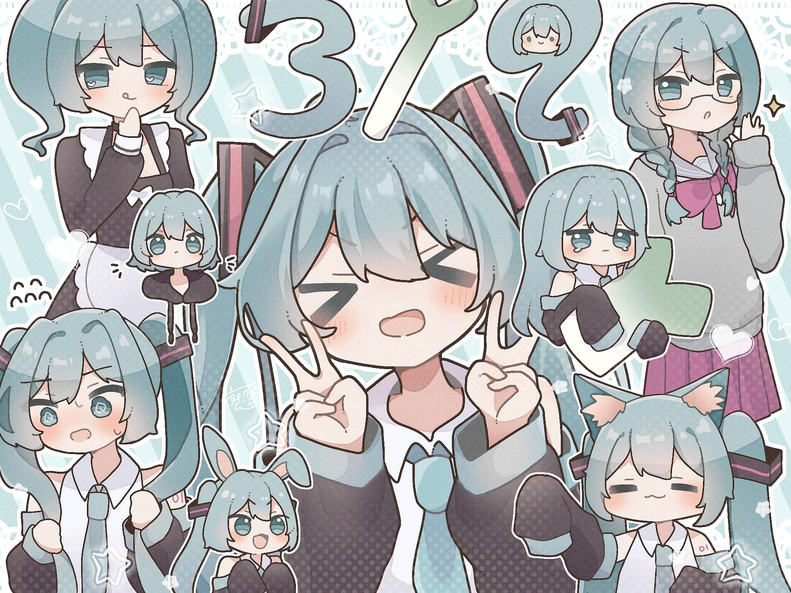

tomoyo's first blog
tomoyo`s first blog
用来写什么？
2024-12-3-15:32 Nefu校园内（是的,bro,这个时候你刚刚考完万恶的系统分析🙃，周五还有计组，5章一张没看）
会用来记录tomoy`s blog的发展和维护（虽然是静态页面😂,仓库里是html,css,js，但以后会添加一些好玩的功能的🤗,锻炼一下自己贫瘠的脑子。）
由于自身的能力限制，无法添加好看的页面或者功能（比如添加评论？视频？）
而且面临考研，任务艰巨…但万事开头难，先做起来，之后在去慢慢修改喽😇
本博客所有文章除特别声明外，均采用 CC BY-NC-SA 4.0 许可协议。转载请注明来源 Tomoyo！